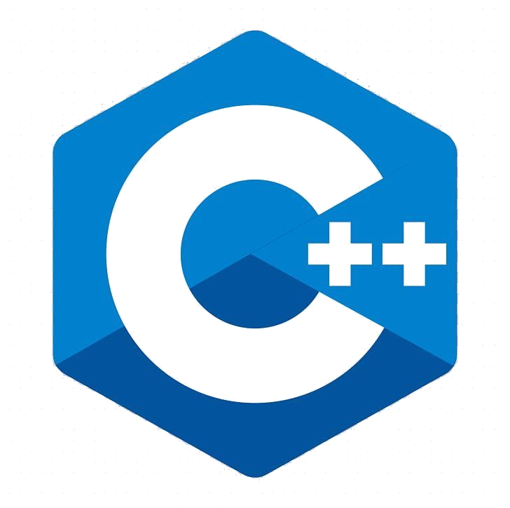
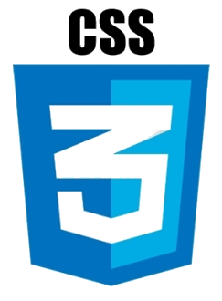

Mario Alejandro García Villarreal
Licenciado en Ingeniería Electrónica por la Universidad Autónoma Metropolitana(UAM), Maestría en “Procesamiento Digital de Señales”, en la Universidad Nacional Autónoma de México, Facultad de Ingeniería.
Habilidades técnicas
Análisis, diseño e implementación de circuitos analogicos y digitales. Uso de microntroladores de microchip,esp8266,esp32 y arduino. Diseño de circuitos impresos en protel altium-dxp,kicad. Desarrollo de programas en visión computacional. Manejo de bases de datos MySQL MariaDB, y MongoDB. Administración de S.O.,GNU-Linux(distros basadas en debian,fedora,arch-linux). Desarrollo de aplicaciones con Qt, Android-Studio, VisualStudio-code. Conocimientos de Networking. Lenguajes de programación:



Otros:
